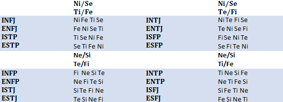

Bạn đã từng nghe nói tới MBTI rồi đúng không? Đây là một bộ công cụ trắc nghiệm tính cách được Myers-Briggs xây dựng để phân nhóm tính cách con người, trên nền tảng các hệ thống khái niệm của Carl Jungs. Nếu bạn đã biết đến MBTI, bạn chắc hẳn đã từng làm qua các bài trắc nghiệm. Có nhiều bài trắc nghiệm bằng Tiếng Việt và Tiếng Anh miễn phí trên mạng. Tuy nhiên đáng buồn là phần lớn các trang Tiếng Việt này (và nhiều MBTI course) diễn đạt một cách hoàn toàn sai lầm bản chất của MBTI. Các bài trắc nghiệm MBTI vẫn thường xuyên bị nghi ngờ về tính ổn định, và, ít nhất theo thống kê của tôi qua một thời gian nghiên cứu, phần nhiều kết quả test là…sai hoàn toàn. Muốn hiểu và phát huy các ứng dụng của MBTI, bạn cần phải nắm được căn bản lý thuyết của MBTI. 1. MBTI là gì: MBTI là iết tắt của Myers-Briggs Type Indicator, là một công cụ trắc nghiệm tính cách được đặt theo tên của hai người đã tạo ra nó. Công cụ này được xây dựng dựa trên các hệ thống của Carl Jungs về cách tiềm thức con người nhận thức thế giới. Mỗi nhóm người có một cách nhận thức thế giới khác nhau, chúng tạo thành phân loại MBTI của bạn. MBTI đơn thuần là một mô hình nhận thức. Nó nói lên cách tiềm thức bạn tiếp nhận và xử lý thông tin. Nó không nói lên sở thích, thái độ, học vấn, tư chất … hay nói chung chung là các biểu hiện cụ thể của bạn trong một tình huống (đây là lý do mà các bài test thường đưa ra kết quả sai). Tuy nhiên nó, trong một chừng mực nhất định, có thể dự đoán phản ứng của bạn trong một môi trường, các vấn đề có thể phát sinh và giúp bạn vạch ra các phương hướng giải quyết. Phân loại MBTI của mỗi người là cố định và không thay đổi. MBTI dựa trên một concept xa hơn là tính cách cốt lõi (core personality): Theo đó, dù biểu hiện bên ngoài của bạn có biến thiên theo thời gian, thì cách tiềm thức bạn tiếp nhận thông tin là cố định. 2. Các cặp đối cực trong MBTI: MBTI được tạo thành dựa trên 4 cặp đối cực là E/I, N/S, T/F và P/J. Các khái niệm này thường được hiểu một cách nôm na và đễ gây nhầm lẫn: E (extraversion – hướng ngoại) và I (introversion – hướng nội): E không phải nói nhiều, thích đi chơi cũng như I không phải nói ít, thích ở nhà. E và I là xu hướng tiếp thu năng lượng. Nếu bạn là một E, bạn sẽ cảm thấy thoải mái hơn, suy nghĩ thông suốt hơn, có nhiều ý tưởng hơn khi bạn tương tác với người khác. Ngược lại, nếu bạn là I, bạn sẽ cảm thấy dễ chịu và sáng suốt hơn khi ở một mình. N(iNtuition – trực giác) và S (Sensing – cảm giác): N không phải hay mơ mộng, hay nghĩ về tương lai cũng như S không phải chỉ biết có thực tế. N và S là concept nhận thức vấn đề. N kết nối vấn đề nhanh, rộng hơn và có xu hướng tìm kiếm các ý nghĩa bản chất, các mô thức chung trừu tượng kết nối các sự vật/sự kiện. S tiếp thu tốt hơn các đặc điểm ở hiện tại. Nếu bạn là N, S là điểm yếu của bạn: bạn có thể thấy khó khăn khi phải làm việc với các chi tiết, như các công việc đòi hỏi số liệu hoặc các công việc chân tay. Nếu bạn là S, N là điểm yếu của bạn: bạn cảm thấy khó khăn khi phải tiếp thu các ý tưởng trừu tượng, khó hiểu, nặng tính lý thuyết, bạn học hỏi tốt hơn qua trải nghiệm thực tế và các ví dụ thực tế. T(Thiking – Lý trí) và F (Feeling – Tình cảm): Hai khái niệm này tương đối rõ ràng. T ưu tiên sự hợp lý khi giải quyết vấn đề. F ưu tiên cảm xúc của bản thân (hoặc của người khác) khi giải quyết vấn đề. Nhưng hãy nhớ rằng đây là xu hướng tự nhiên chứ không phải sở thích hay mục đích sống: Một T đôi khi có thể muốn đồng cảm và làm vui lòng người khác, một F đôi khi có thể muốn lên kế hoạch hoặc tỏ ra lý trí, tuy nhiên các hành động này “không tự nhiên” và thường không mang lại kết quả tốt. Một T thường có F kém phát triển hơn và ngược lại. Nếu bạn cảm thấy khó xử (và khó chịu) khi người khác chia sẻ cảm xúc với mình và mong chờ bạn cũng làm điều đó, bạn nhiều khả năng là một T. Ngược lại, nếu bạn có thể chia sẻ cảm xúc một cách tự nhiên nhưng lại cảm thấy khó chịu khi người khác tỏ ra quá thẳng thắn không quan tâm tới cảm xúc của bạn (và của xung quanh), bạn nhiều khả năng là một F. P(Perceiving – Tiếp nhận) và J(Judging – Phán xét): J không phải gọn gàng ngăn nắp có kế hoạch và P cũng không bừa bộn và vô tổ chức. Khác biệt nằm ở xu hướng ưu tiên nhận thức: P sẽ tiếp nhân tất cả thông tin rồi mới phân loại theo một hệ thống ưu tiên của họ. J sẽ điều chỉnh/phán xét thông tin bên ngoài cho phù hợp với hệ thống nhận thức của họ. Tôi sẽ nói rõ hơn ở một bài sau này (well, nếu tôi có thời gian). 3. Các chức năng nhận thức trong MBTI: Cách chia 4 đối cực như trên có thể được coi là một phương pháp đơn giản hóa. MBTI được dựa trên các khái niệm gọi là chức năng nhận thức. Mỗi phân loại MBTI có thể sử dụng 4 chức năng nhận thức. Chức năng đầu gọi là chức năng chủ đạo (dominant function) chi phối xu hướng nhận thức của bạn. Chức năng thứ hai là thứ ba (auxlixiary và tertiary function) là các chức năng hỗ trợ để sắp xếp /hoàn thiện lại chức năng chủ đạo, trong đó chức năng thứ hai được sử dụng một cách tự nhiên và thường trực hơn. Chức năng cuối cùng là chức năng yếu (inferior function): bạn sử dụng nó không tốt và nó thường gây ra vấn đề trong cuộc đời bạn.  Ni (introverted intuition): Ni quan sát rất nhiều thông tin và tổng hợp lại thành các mô thức chung để giải thích tình hình. Thông qua các mô thức này Ni có thể nắm bắt vấn đề là dự đoán được các xu thể tương lai. Ở các vị trí phát triển (1 và 2, với các phân loại NJ), Ni đem lại khả năng tổng hợp, nắm bắt thông tin và nhìn ra mấu chốt của sự kiện. Ở các vị trí yếu hơn (3 và 4, với các phân loại SP), không sử dụng được Ni hoặc sử dụng Ni không tốt có thể dẫn tới nhiều vấn đề (chẳng hạn: nhìn nhận đánh giá vấn đề bằng các chi tiết lặt vặt thiếu tổng quát, bị ám ảnh bởi ý nghĩa cuộc đời, hoang mang về tương lai). Ne (extraverted intuition): Ne quan sát thông tin và mở rộng tầm nhìn của mình ra rất nhiều các thông tin liên quan, tạo ra các mạng lưới thông tin rất rộng. Thông qua mạng lưới này Ne có thể nhìn một sự kiện dưới rất nhiều góc độ và đặt ra rất nhiều câu hỏi để làm sáng rõ vấn đề. Ở các vị trí phát triển (với các phân loại NP), Ne mang đến khả năng nhìn nhận vấn đề từ nhiều góc độ khác nhau và có thể tạo ra các tổ hợp mới có tính sáng tạo. Ở các vị trí yếu hơn (với các phân loại SJ), không sử dụng được Ne hoặc sử dụng Ne không tốt có thể dẫn tới nhiều vấn đề (chẳng hạn: phán xét vấn đề thiếu khách quan thuần túy qua kinh nghiệm “, bị ám ảnh bởi nhiều khả năng phi lý). Si (introverted Sensing): Si kết nối các chi tiết quá khứ với hiện tại, cho phép tham chiếu để nhận biết hiện tại. Ở vị trí phát triển (với các phân loại SJ), Si mang tới khả năng xử lý hiện tại bằng bề dày kinh nghiệm và tri thức (các thông tin đã trải qua). Ở vị trí yếu hơn (với NP), không sử dụng được Si hoặc sử dụng Si không tốt có thể dẫn tới nhiều vấn đề (chẳng hạn: đánh giá thiếu dứt khoát, hay quên chi tiết). Se (extraverted Sensing): Se tiếp thu trực tiếp các thông tin ở hiện tại. Ở vị trí phát triển (với các phân loại SP), Se mang tới khả năng nhận biết, cảm nhận và thích nghi tốt với hiện tại (chẳng hạn gu thẩm mỹ, ăn mặc tốt, cảm nhận không gian tốt, nhanh chân lẹ tay, dễ hòa đồng, dễ tiếp thu trào lưu mới). Ở vị trí yếu hơn (với NJ), không sử dụng được Se hoặc sử dụng Se không tốt có thể dẫn tới nhiều vấn đề (chẳng hạn: không chú ý đến chi tiết, cảm quan không gian kém). Te (extraverted Thiking): Te hướng tới xử lý và sắp xếp thông tin bên ngoài một cách hiệu quả/hợp lý theo một hệ quy chuẩn. Có thể hình dung Te như một “bản kế hoạch”: Nếu bạn muốn đạt tới một mục đích nào đó, bạn sử dụng Te để sắp xếp thông tin, chuẩn bị tài nguyên, nhân lực, vật lực etc. Ở vị trí phát triển (với phân loại TJ), Te cho phép phác họa ra các kế hoạch/quan điểm để thực hiện/chứng minh những gì Ni/Si tổng hợp được. Ở các vị trí yếu (với FP), Te gây ra một số vấn đề (như không biết điều gì là nên làm, thiếu kế hoạch dài hạn). Ti (introverted Thiking): Ti hướng tới xử lý và sắp xếp hệ thống bên trong.Có thể hình dung Ti như một “cỗ máy”: Bạn cần biết chi tiết nào nên được đặt ở vị trí nào. Ở vị trí phát triển (với phân loại TP), Ti cho phép điều chỉnh hệ thống bên trong để đưa ra các nhận định chuẩn xác, chặt chẽ, hợp lý nhất. Ở các vị trí yếu (với FJ), Ti gây ra một số vấn đề (như không phân biệt được đúng sai). Fe (extraverted Feeling): Fe hướng tới điều chỉnh cảm xúc của bên ngoài theo một hệ quy chuẩn. Fe cố gắng tương tác, hòa đồng, quan tâm đến mọi người để tạo ra một không khí cảm xúc hài hòa. Ở vị trí phát triển (với phân loại FJ), Fe mang tới sự nhạy bén với cảm xúc của người khác để điều chỉnh thái độ bản thân cho phù hợp. Ở các vị trí yếu (với TP), Fe gây ra một số vấn đề (như thiếu nhạy cảm, hay nói quá thẳng). Fi (introverted Feeling): Fi hướng tới điều chỉnh cảm xúc bên trong và dùng cảm xúc bản thân để đưa ra nhận xét về các sự việc bên ngoài. Ở vị trí phát triển (với phân loại FP), Fi mang tới khả năng nhận biết thấu đáo các cảm xúc/giá trị bản thân và khả năng đồng cảm “đặt mình vào vị trí người khác”. Ở các vị trí yếu (với TJ), Fi gây ra một số vấn đề (như quá nhạy cảm, dễ tự ái, tự hạ thấp giá trị bản thân).